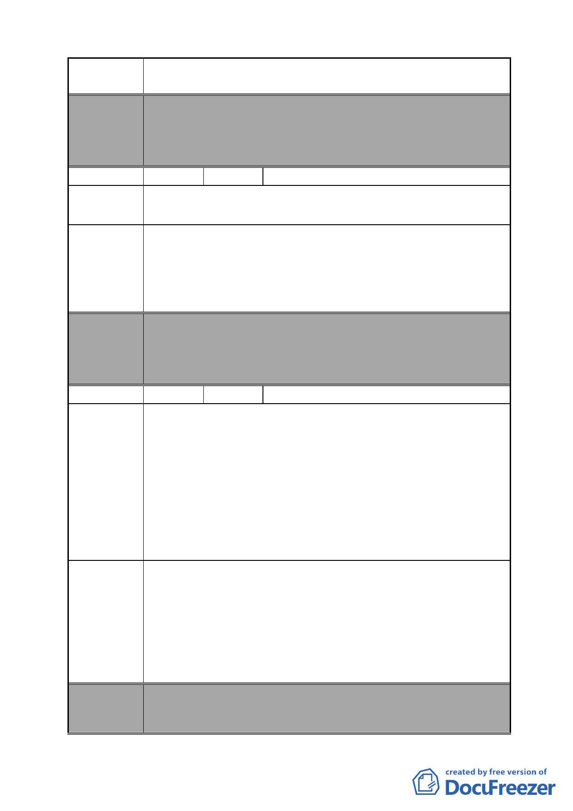

案 名 變更臺北市南港區鐵路地下化沿線土地主要計畫案
委員會
決議
編號
本案除文字誤繕應再作修正外，其餘依市府本次會議所送修
正計畫書內容通過。
（市府本次會議所送修正計畫書，業將陳情地點剔除於市地
重劃範圍）
34 陳情人 宋則範
陳情理由
建議辦法
委員會
決議
編號
陳情理由
建議辦法
委員會
決議
將 C 區內向陽路 84 號至 110 號建物及土地剔除，不納入重劃
範圍內。
將 C 區變更為住商混合區（向陽路 84 號至 110 號建物及土地
除外）。
C 區不興建大型公園
本案除文字誤繕應再作修正外，其餘依市府本次會議所送修
正計畫書內容通過。
（市府本次會議所送修正計畫書，業將陳情地點剔除於市地
重劃範圍）
35 陳情人 王新勝等（附 59 人連署）
1.主要計畫中指出，土地回饋比例將於細部計畫中擬訂，但此
比例關係民眾權益甚大，應先行告知。
2.主要計畫中未說明變更為商業區後之容積率，應先行告知。
3.僅持有建物而未持有土地之建物所有權人，未來權益不明，
應先行告知。
4.本次市地重劃範圍，包括 A 至 F 六大區塊，其中 F 區居民
已整合多時，若上述 3 項建議獲市府回應釐清，並經 F 區居
民開會同意參與此次市地重劃，卻因其他區塊導致重劃時程
延宕，則應針對 F 區優先辦理重劃。
請市府於主計中載明：
1.土地回饋比例。
2.變更後容積率（不得低於南港輪胎核定之 390％）。
3.未持分土地之建物所有權人權益。
4.各區單獨辦理重劃之可行性。
若依規定未能於主要計畫中載明上列事項，則都發局應另行
召開說明會向民眾說明，並列入正事會議紀錄以昭公信。
本案除文字誤繕應再作修正外，其餘依市府本次會議所送修
正計畫書內容通過。
- 41 -